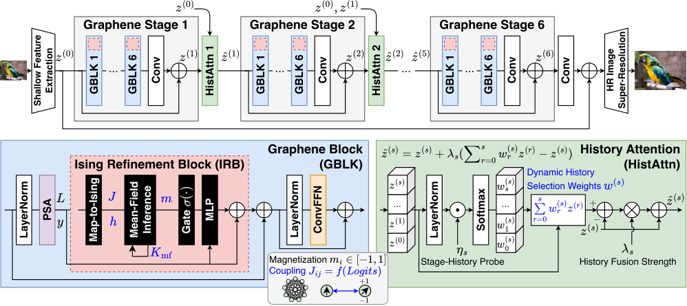
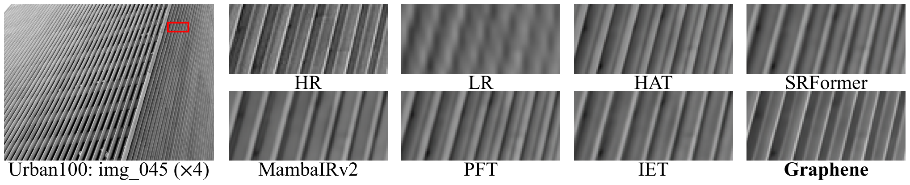

A companion Lean 4 development with Mathlib checks the IRB coupling algebra, mean-field stationarity, gate bounds, fixed-point convergence, and history-fusion properties.
Abstract
This paper proposes Graphene, a lightweight image super-resolution architecture with two complementary feature refinement mechanisms: Ising-model-inspired local feature refinement using an Ising Refinement Block (IRB) and stage-history-based feature refinement using a History Attention (HistAttn) module. The IRB reuses attention output features and pre-softmax attention logits to construct signed pairwise token couplings within each local window, applies unrolled mean-field updates, and refines features through a gated residual correction. These signed couplings allow alignment and opposition between latent spins to modulate local feature refinement. HistAttn attends over the current stage output and earlier representations at the same token position and adaptively blends the current stage output with a history-weighted feature aggregate without adding spatial pairwise attention. On Urban100 at $\times4$, Graphene and Graphene-light improve over IET and IET-light by 0.24 dB and 0.38 dB, respectively, with 34.3%/13.7% fewer parameters, 44.8%/44.4% fewer FLOPs, 78.4%/71.5% lower latency, and 76.0%/85.5% lower peak memory. Real-world SR comparisons further show that Graphene recovers fine details and preserves textures across diverse degradations. Code and reference checkpoints are available at https://github.com/skethz/Graphene
Problem
Lightweight image super-resolution must improve reconstruction quality while limiting parameters, FLOPs, latency, and peak memory. Windowed Transformers already compute attention logits and intermediate stage outputs, but these quantities are not reused for further feature refinement.
Approach
Graphene adds an Ising Refinement Block that turns pre-softmax PSA attention logits into signed, symmetric window-local spin couplings. It runs unrolled mean-field updates whose magnetizations gate residual corrections. A History Attention module blends each stage output with a learned, softmax-weighted aggregate of earlier stage features at the same token position. The mathematical properties, including coupling algebra, stationarity, magnetization and gate bounds, conditional convergence, and history aggregation, are checked in a companion Lean 4.33.1 and Mathlib development that passes an axiom audit.

Figure 2: Overall architecture of Graphene. Top: Given an LR input, Graphene applies shallow feature extraction with a convolutional stem, deep feature extraction through six Graphene stages, each containing six Graphene Blocks (GBLKs), followed by a trunk convolution, and HR reconstruction with a PixelShuffle head ( Shi et al., 2016 ) and a long residual connection. Bottom-left: Each GBLK applies
Results
On Urban100 at ×4, Graphene and Graphene-light gain 0.24 dB and 0.38 dB PSNR over IET and IET-light. They use 34.3%/13.7% fewer parameters, 44.8%/44.4% fewer FLOPs, and 78.4%/71.5% lower latency. Ablations show that the signed, symmetric couplings and HistAttn each contribute to the gains.

Figure 5: Top: \times 4 SR on Urban100 img_045. Graphene preserves the repeated line structure visible in the HR crop. Bottom: Local Attribution Maps for the outlined output region, with Diffusion Index (DI) values rounded to integers.